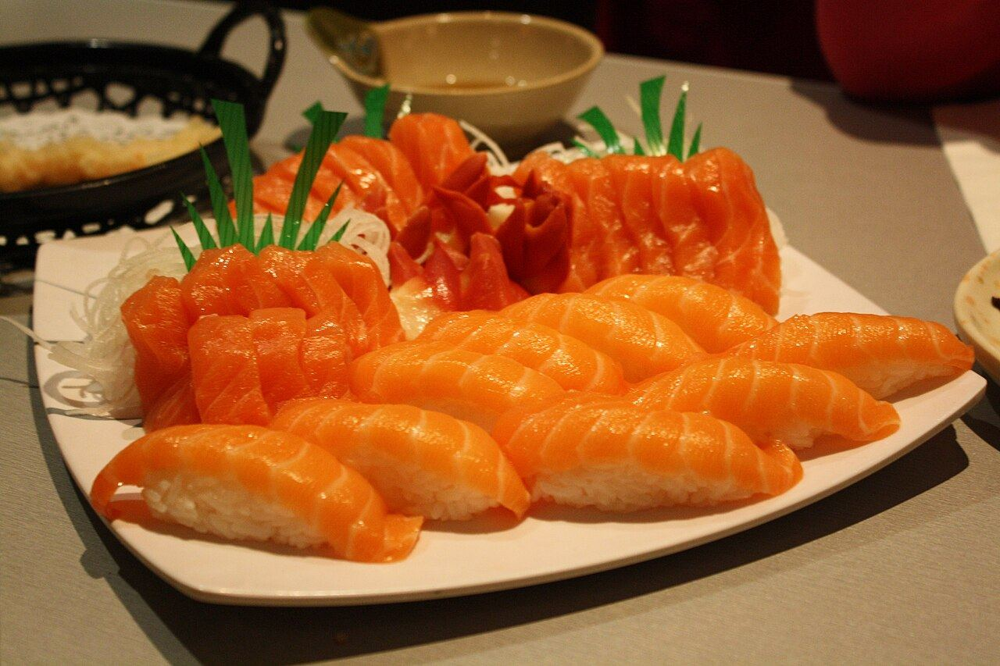
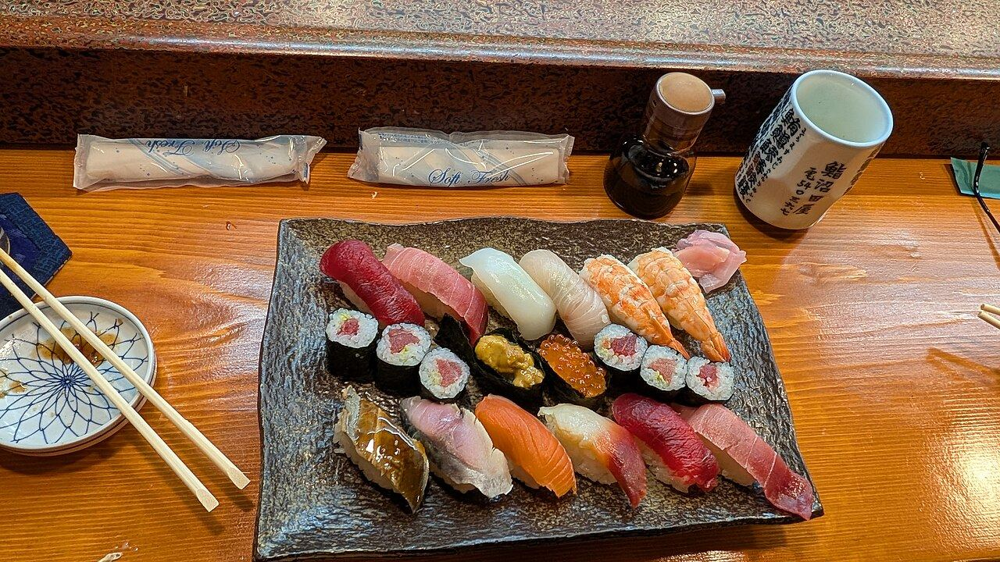
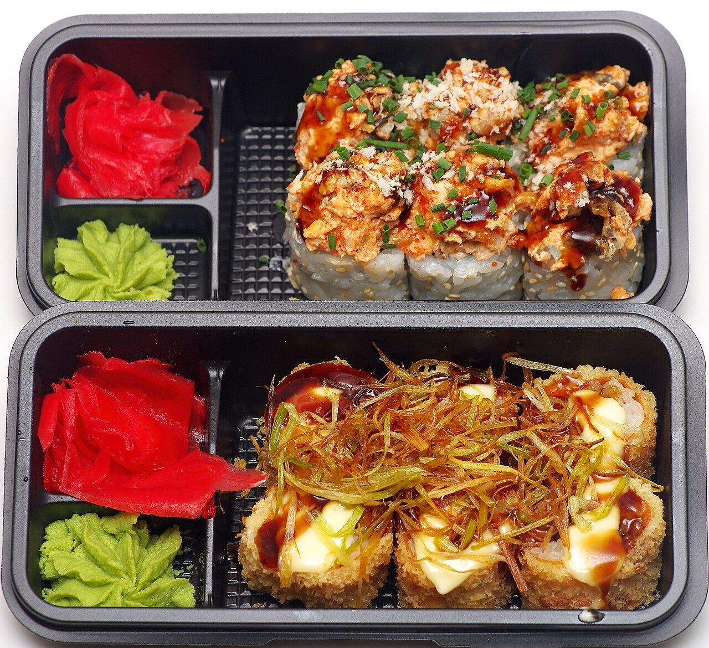

Plateau 24 pièces
À partager, assortiment du chef.
Avis clients— DT à confirmer

Casa Sushi se présente comme le premier restaurant de sushis de Hammamet : plateaux à partager, makis, california et sashimis.
Commande par téléphone ou WhatsApp, livraison ou à emporter. Zones et frais de livraison à confirmer.

Commande pré-remplie, adresse incluse : moins d’erreurs, moins d’appels.
Carte en photos, prix modifiables en 1 minute.
La demande de table arrive pré-remplie ; vous confirmez quand vous êtes disponible.
Confirmation et heure de livraison envoyées sur WhatsApp.
Livraison, à emporter ou sur place : votre commande arrive directement sur le WhatsApp du restaurant.
Notes publiques uniquement, avec leur source. Aucun avis n'a été inventé ni copié pour cette démo.
Des plateaux aux couleurs du Japon, à Hammamet. photos d'ambiance sous licence libre — à remplacer par vos photos
Livraison sur Hammamet et environs, ou à emporter sur place.
| Lundi – Dimanche | 12:00 – 00:00 |